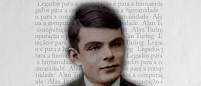
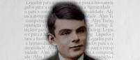

Aproximadamente 14.400.000 resultados (0,39 segundos)
pt.wikipedia.org > wiki > Alan_Turing
Alan Turing - Wikipédia, a enciclopédia livreAlan Mathison Turing OBE (Paddington, Londres, 23 de junho de 1912 — Cheshire East, Cheshire, 7 de junho de 1954) foi um matemático, lógico, ...
Causa da morte: Suposto suicídio por ingestão de cianeto Nome completo: Alan Mathison Turing
Morte:7 de Junho de 1954 (41 Anos);
Alma mater: Universidade de Cambridge;
revistagalileu.globo.com › Cultura › noticia › 2018/06 › 17-fatos-e-c...
17 fatos e curiosidades sobre a vida do Alan Turing - Revista7 de jun. de 2018 - Há 64 anos, uma dose de cianeto pôs fim à vida daquele que é considerado o pai da computação: o inglês Alan Turing.
www.ebiografia.com › alan_turing
Biografia de Alan Turing - eBiografia15 de jul. de 2019 - Alan Turing (1912-1954) foi um matemático britânico, pioneiro da computação, foi considerado o pai da ciência computacional.


 


Alan Turing
Matemático
Alan Mathison Turing foi um matemático, lógico, criptoanalista e cientista da computação britânico. Foi influente no desenvolvimento da ciência da computação e na formalização do conceito de algoritmo e computação com a máquina de Turing, desempenhando um papel importante na criação do computador moderno.
Nascimento: 23 de junho de 1912, Maida Vale, Londres, Reino Unido